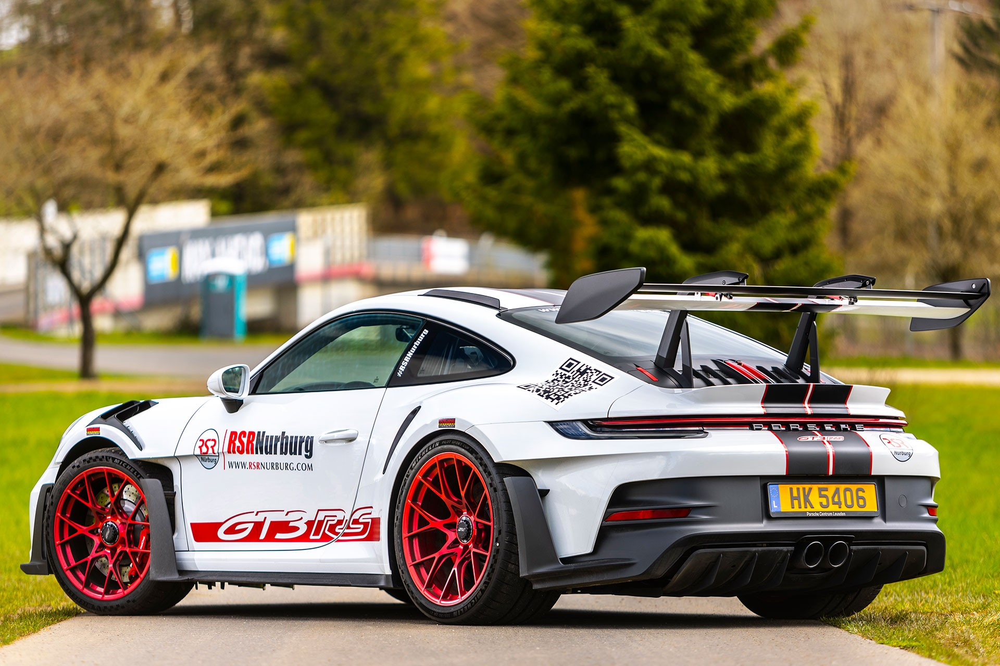

Autos Deportivos 
Autos Deportivos
| NISSAN GTR R34 | NISSAN GTR R35 | INICIO | SUPRA MK4 |
|---|
| PORSCHE GT3 RS |
|---|
El Porsche 911 GT3 RS es una de las versiones más radicales y orientadas al rendimiento del icónico Porsche 911. Está diseñado para ofrecer un equilibrio casi perfecto entre la conducción en pista y la usabilidad en carretera, y ha sido un referente de lo que puede lograr Porsche en términos de ingeniería, tecnología y diseño para coches de alto rendimiento. Características Generales del Porsche 911 GT3 RS:
|
|  |